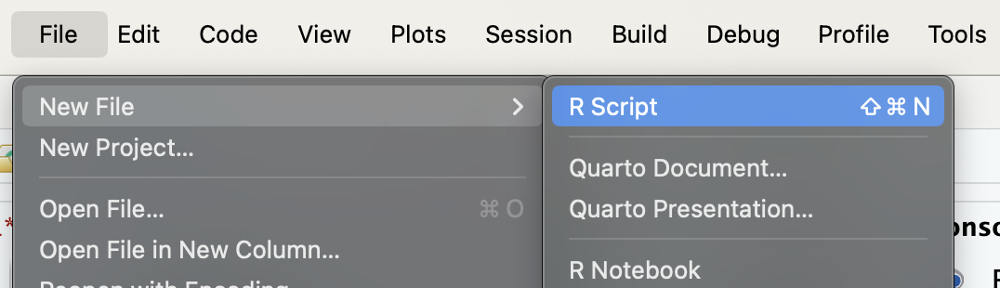
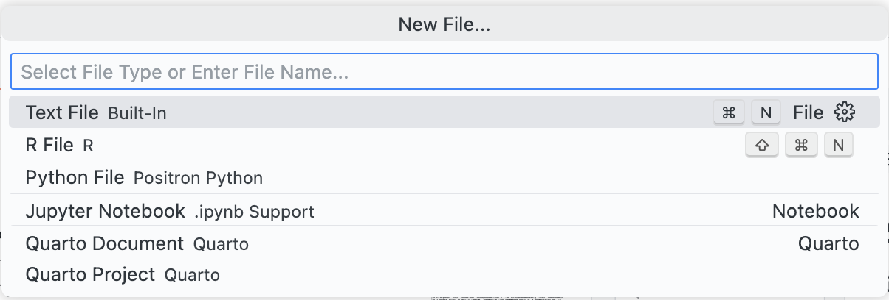
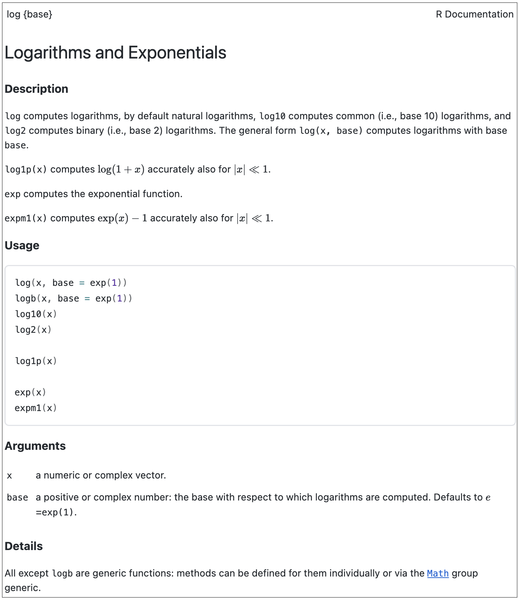

1+1; 3-2; 4*5; 10/2
3^3; sqrt(625); 81^(1/3)
5%%3; (3^3+5-1)
log(10); exp(5)2 พื้นฐาน R
เมื่อผู้อ่านดาวน์โหลดและติดตั้งโปรแกรม R รวมทั้ง RStudio หรือ Positron แล้ว บทเรียนนี้จะกล่าวถึงการใช้ภาษาเบื้องต้น ได้แก่ การคำนวณทางคณิตศาสตร์พื้นฐาน ฟังก์ชัน มโนทัศน์เกี่ยวกับตัวแปรในภาษา R ประเภทของตัวแปรและการสร้างตัวแปร และการอ้างอิงค่าหรือสมาชิกภายในตัวแปรที่สร้างขึ้น ในการเรียนรู้และประมวลผลคำสั่งตามเนื้อหาในบทเรียนนี้ ผู้อ่านสามารถพิมพ์คำสั่งบนเอกสาร Script โดยหากใช้ RStudio ผู้อ่านสามารถเปิดเอกสาร Script ได้โดยคลิกที่แถบเมนูด้านบน File –> New File –> R Script สำหรับใน Positron ให้สร้างไฟล์เอกสาร .R โดยบนแถบเมนูให้คลิกที่ File –> New File –> R File R ดังรูป 2.1


รายละเอียดมีดังนี้
2.1 การคำนวณทางคณิตศาสตร์พื้นฐาน
ภาษา R มีฟังก์ชันพื้นฐานสำหรับการคำนวณทางคณิตศาสตร์จำนวนมาก เช่น การ ดำเนินการพีชคณิตพื้นฐานได้แก่ การบวก (+) ลบ (-) คูณ (*) หาร (/) ยกกำลัง (^) และ รากที่ สอง (sqrt()) รวมทั้งการคำนวณผลลัพธ์จากฟังก์ชันอดิศัย (implicit function) ต่าง ๆ เช่น ฟังก์ชันตรีโกณมิติ sin(), cos(), tan() ฟังก์ชันลอการิทึมธรรมชาติ log() ฟังก์ชันเอกซ์ โพเนนเซียล exp() และ วงเล็บ ( ) เป็นต้น ชุดคำสั่งด้านล่างแสดงตัวอย่างการดำเนินการทาง คณิตศาสตร์ใน R ผู้อ่านลองพิมพ์คำสั่งดังกล่างลงในเครื่องคอมพิวเตอร์ของตนเอง จากนั้นสังเกต ผลลัพธ์ที่ได้
2.2 ฟังก์ชัน (functions)
ในหัวข้อที่ผ่านมาจะเห็นว่ามีการใช้งานฟังก์ชันในโปรแกรม R ไปบางตัวทั้งฟังก์ชันทาง คณิตศาสตร์ เช่น sqrt(), exp() และ log() และฟังก์ชันกราฟิกคือ hist() เป็นต้น ผู้ อ่านจะสังเกตว่าการใช้ฟังก์ชันดังกล่าวในการทำงานช่วยให้ผู้ใช้ลดขั้นตอนในการทำงานที่ไม่ จำเป็นไปได้ นอกจากนี้ยังช่วยให้ syntax ของผู้เขียนโปรแกรมสั้นลง ทำงานได้ไวขึ้นและมี ประสิทธิภาพสูงขึ้น เช่นหากต้องการหาค่าสัมบูรณ์ของ -10 ในกรณีที่ไม่ได้ฟังก์ชันเข้ามาช่วยใน การประมวลผล ผู้วิเคราะห์จำเป็นต้องเขียนอัลกอริทึมเพื่อหาค่าสัมบูรณ์เองโดยอาจใช้คำสั่ง IF, ELSE เพื่อควบคุมเงื่อนไขการทำงานของ R ดังตัวอย่างคำสั่งด้านล่าง ซึ่งจะได้ผลลัพธ์เท่ากับ 10
x<-(-10)
## เขียนกระบวนการเพื่อหา absolute ของ x
if(x<0){-(x)} else {x}[1] 10อย่างไรก็ตามเมื่อเปรียบเทียบกับการใช้ฟังก์ชันเข้ามาช่วยในการทำงาน โดยในกรณีนี้นำ เอาฟังก์ชัน abs() เข้ามาช่วยคำนวณค่าสัมบูรณ์ ผู้อ่านจะเห็นว่าการเขียนคำสั่งลดลงเหลือเพียง บรรทัดเดียวเท่านั้น ดังนี้
abs(-10)[1] 10จากตัวอย่างในข้างต้นผู้อ่านจะสังเกตเห็นว่าการใช้ฟังก์ชันในการดำเนินงานช่วยลดขั้น ตอนและประหยัดเวลาในการทำงานได้อย่างมาก ในสภาพแวดล้อมการทำงานบนโปรแกรม R ฟังก์ชัน (function) คือชุดคำสั่งสำเร็จรูปที่ถูกพัฒนาขึ้นสำหรับการทำงานเฉพาะด้าน การใช้ ฟังก์ชันในการดำเนินงานจะช่วยให้ผู้ใช้ประหยัดเวลา ลดความผิดพลาดในการทำงาน และทำให้ กระบวนการทำงานมีประสิทธิภาพมากยิ่งขึ้น ฟังก์ชันในโปรแกรม R ไม่ได้จำกัดการใช้งานแต่ด้าน การคำนวณทางคณิตศาสตร์เท่านั้น แต่ยังมีฟังก์ชันที่สามารถใช้ดำเนินงานลักษณะอื่นได้อีกหลาย ประเภท เช่น การคัดเลือกตัวแปร การคัดกรองข้อมูล การสร้างแผนภาพหรือกราฟทางสถิติ และ การประมวลผลเพื่อหาคำตอบในทางสถิติ เป็นต้น
ฟังก์ชันแต่ละตัวมีส่วนประกอบจำนวน 3 ส่วนหลัก ได้แก่ (1) ส่วนข้อมูลนำเข้า (input) ส่วนนี้เป็นส่วนที่ผู้ใช้โปรแกรมต้องกำหนดหรือกรอกเข้าไปในฟังก์ชันเพื่อควบคุมการทำงานให้เป็น ไปตามที่ต้องการ (2) ส่วนประมวลผล (process) ส่วนนี้เป็นส่วนการทำงานเบื้องหลัง ปกติแล้วผู้ ใช้มักจะไม่เห็นการทำงานในส่วนนี้ของฟังก์ชัน การประมวลผลนี้จะดำเนินการโดยขึ้นกับชุดคำสั่งที่ ผู้พัฒนาได้กำหนดไว้ และข้อมูลนำเข้าที่ผู้ใช้ระบุ และ (3) ส่วนผลลัพธ์ (output) เป็นผลลัพธ์หรือ คำตอบที่ได้จากฟังก์ชัน ซึ่งอาจรายงานให้ผู้ใช้ทราบในหน้าต่าง Console ในทันที่ที่ประมวลผล เสร็จสิ้น หรืออาจเก็บผลลัพธ์ดังกล่าวเอาไว้ในตัวแปร ซึ่งผู้ใช้จะต้องเรียกดูด้วยตนเองอีกครั้งหนึ่ง โดยปกติการเรียกใช้ฟังก์ชันใน R มีรูปแบบคำสั่งดังนี้
function_name(arg1, arg2, ...)โดยที่ function_name คือชื่อของฟังก์ชัน และ arg1 กับ arg2, ... เป็นส่วนข้อมูลนำเข้าของ ฟังก์ชันเรียกว่า อาร์กิวเมนท์ (argument) ใช้สำหรับป้อนข้อมูลที่จำเป็นและควบคุมการทำงานของ ฟังก์ชันเพื่อให้ผลลัพธ์เป็นไปตามที่ผู้ใช้ต้องการ ทั้งนี้ฟังก์ชันสามารถมีอาร์กิวเมนท์ได้มากกว่าหนึ่ง ตัวขึ้นอยู่กับลักษณะงานของแต่ละฟังก์ชัน ยกตัวอย่างเช่น ฟังก์ชัน log(x, base=exp(1)) ที่ มีอาร์กิวเมนท์ 2 ตัวได้แก่ x และ base เมื่อกำหนดค่าทั้งสองฟังก์ชันจะหาค่า logarithm ของ ค่า x เมื่อกำหนดฐานของ logarithm ให้มีค่าเท่ากับ base โดยในคำสั่งข้างต้นกำหนดให้ base = exp(1) ซึ่งมีค่าเท่ากับ \(e \approx 2.71828...\) เรียกว่า natural logarithm ตัวอย่างด้านล่าง แสดงการหา ค่า natural logarithm ของ 10 ด้วยการใช้ฟังก์ชัน log() ข้างต้น
log(x = 10, base = exp(1))[1] 2.302585log(10)[1] 2.302585จากตัวอย่างข้างต้นผู้อ่านจะสังเกตเห็นว่าการเรียกใช้ฟังก์ชันใน R สามารถลดทอนการ เขียนอาร์กิวเมนท์บางตัวได้ ในกรณีที่อาร์กิวเมนท์นั้นถูกกำหนดค่าเริ่มต้น (default value) เอาไว้ จากตัวอย่างที่ผ่านมาจะเห็นว่า อาร์กิวเมนท์ base ถูกกำหนดค่าเริ่มต้น (default) ให้มีค่าเท่ากับ exp(1) ระหว่างการเขียนคำสั่ง log(x, base=exp(1)) กับ log(x) จึงได้คำตอบเดียวกัน ดังนั้นอาร์กิวเมนท์ base จึงเป็นอาร์กิวเมนท์ที่สามารถละการเขียนได้
2.3 การเรียกคู่มือของฟังก์ชัน
R เป็นโปรแกรมที่มีฟังก์ชันให้เลือกใช้งานจำนวนมากในทางปฏิบัติจึงยากที่จะจำวิธีการใช้ ฟังก์ชันทั้งหมด การทำงานบนโปรแกรม R โดยปกติจึงมักมีการเรียกดูคู่มือการใช้ฟังก์ชันที่ใช้เป็น ประจำ โดยผู้ใช้ R สามารถเรียกดูคู่มือของฟังก์ชันที่ต้องการได้โดยพิมพ์คำสั่ง ? ตามด้วยชื่อฟังก์ชัน หรือใช้ฟังก์ชัน help() เพื่อเรียกดูคู่มือดังกล่าว เช่น หากต้องการเรียกดู คู่มือการใช้ ฟังก์ชัน log() ข้างต้นสามารถพิมพ์คำสั่งได้ดังนี้
?log()
help(log)ตัวอย่างด้านล่างแสดงคู่มือการใช้งานฟังก์ชัน log() ข้างต้น เ

log() ที่ได้จากการพิมพ์คำสั่ง ?log()
R มีฟังก์ชันจำนวนมากจากหลาย library สำหรับการทำงานในด้านวิทยาการข้อมูล ในหนังสือเล่มนี้ผู้อ่านจะได้รู้จักและเรียนรู้การประยุกต์ใช้ฟังก์ชันต่าง ๆ ที่จำเป็นในกระบวนการวิเคราะห์ข้อมูล ตั้งแต่การทำความสะอาดข้อมูล การตรวจสอบข้อมูลที่ขาดหายไป การรวมและแยกข้อมูล การสร้างทัศนภาพข้อมูล ไปจนถึงการคำนวณทางสถิติต่าง ๆ นอกจากการใช้ฟังก์ชันที่ผู้อื่นได้สร้างเอาไว้ ในบางกรณีผู้วิเคราะห์อาจจำเป็นจะต้องสร้างฟังก์ชันของตนเองเพื่อใช้ในการทำงานหรือเพื่อแก้ปัญหาต่าง ๆ ซึ่งจะกล่าวถึงในประเด็นนี้อีกครั้งในส่วนท้ายของบทเรียนนี้ เนื้อหาส่วนถัดไปจะกล่าวถึงมโนทัศน์ของตัวแปรในภาษา R ซึ่งพื้นฐานที่มีความสำคัญมากในการทำงานด้านสถิติและวิทยาการข้อมูล
2.4 ตัวแปร (variables)
คำว่า “ตัวแปร” ภายใต้สภาพแวดล้อมของภาษา R มีความหมายที่แตกต่างไปจากตัวแปรใน เชิงการวิจัยหรือการวิเคราะห์ข้อมูลทางสถิติ กล่าวคือ ตัวแปรเป็นวัตถุ (object) ประเภทหนึ่งที่อยู่ภายใต้สภาพแวดล้อมของภาษา R มีหน้าที่บันทึก/เก็บข้อมูลหรือผลลัพธ์ที่ได้จากการประมวลผลเอาไว้ในหน่วยความจำ ของคอมพิวเตอร์ ซึ่งทำให้ผู้ใช้สามารถเรียกดูค่าที่เก็บไว้ดังกล่าวในภายหลังหรือนำไปใช้ต่อใน การดำเนินการขั้นตอนอื่น ๆ โดยไม่ต้องป้อนข้อมูลหรือประมวลผลใหม่ซ้ำ ๆ
ตัวแปรในภาษา R สามารถจำแนกได้หลากหลายประเภท ซึ่งทำให้การสร้างตัวแปร และการดำเนินการสำหรับตัวแปรแต่ละประเภทมีรายละเอียดที่แตกต่างกันในบางส่วน หัวข้อนี้จะ กล่าวถึงการสร้างตัวแปรพื้นฐานที่เรียกว่าตัวแปรสเกลาร์ (scalar) ที่ใช้เก็บข้อมูลได้หนึ่งค่าต่อ ตัวแปร การสร้างตัวแปรแบบสเกลาร์ใน R สามารถทำได้โดยใช้คำสั่ง <- (อ่านว่า assign) เช่น x<-10 หมายถึงกำหนดให้ R เก็บค่าคือ 10 ที่อยู่ทางส่วนปลายของลูกศรไว้ในตัวแปรชื่อ x ที่อยู่ ทางส่วนหัวของลูกศร และเมื่อสร้างตัวแปร x ในข้างต้นแล้ว ผู้ใช้สามารถเรียกดูหรือใช้ค่าที่เก็บไว้ ในตัวแปรได้โดยการเรียกชื่อของตัวแปรดังกล่าว ดังตัวอย่างต่อไปนี้
## assign 10 into variable 'x'
x <- 10
## print x
x[1] 10เมื่อทำการนิยามและกำหนดค่าให้กับตัวแปรแล้ว ผู้วิเคราะห์สามารถนำตัวแปรที่สร้างขึ้น ไปใช้การดำเนินการ หรือประมวลผลร่วมกับตัวแปรอื่น ๆ ต่อไปได้โดยง่าย ดังตัวอย่างต่อไปนี้
## assign 10 into x
x<-10
## assign 5 into y
y<-5
## create z from x+y
z<-x+y
## print z
z[1] 15## create t from x,y,z
t<-exp(x+y)/z
## print t
t[1] 217934.5## find squart root of t
sqrt(t)[1] 466.8345หมายเหตุ
การกำหนดค่าให้กับตัวแปรนอกจากจะใช้ฟังก์ชัน assign (
<-) ดังในตัวอย่างข้างต้นแล้ว ยัง สามารถใช้ฟังก์ชัน=ซึ่งให้ผลลัพธ์เหมือนกัน ข้อสังเกตที่น่าสนใจคือการกำหนดค่าให้กับ ตัวแปรด้วยฟังก์ชัน=ตัวแปรจะต้องอยู่ด้านซ้ายของฟังก์ชัน และค่าหรือข้อมูลที่ต้องการ กำหนดให้กับตัวแปรจะต้องอยู่ทางด้านขวา ในขณะที่การกำหนดค่าให้กับตัวแปรด้วย ฟังก์ชัน<-สามารถทำในลักษณะใดก็ได้เพียงแต่กลับหัวลูกศรตามตำแหน่งของตัวแปร เช่นx<-4หรือ4->xซึ่งจะให้ผลลัพธ์ที่เหมือนกันการเขียนคำสั่งต่าง ๆ ใน R ผู้วิเคราะห์สามารถใช้สัญลักษณ์
#เพื่อช่วยจดบันทึกเตือน ความจำเกี่ยวกับคำสั่งที่ใช้ในการทำงาน โดยข้อความทั้งหมดที่อยู่ภายหลัง#จะไม่ถูกนำ ไปประมวลผลการตั้งชื่อตัวแปรสามารถตั้งชื่อได้อย่างอิสระตามความต้องการของผู้ใช้ โดยสามารถ ประกอบได้ทั้งตัวอักษรและตัวเลข แต่มีข้อจำกัดในการตั้งชื่อคือห้ามขึ้นต้นชื่อตัวแปรด้วย ตัวเลขและอักขระพิเศษ เช่น
!, @, #, $, %, ^, &, *เป็นต้น นอกจากนี้อักษร ตัวเล็กและตัวใหญ่ ภาษา R จะถือว่ามีความแตกต่างกัน (case-sensitive) เช่น
## assign 5 to x
y<-5
## assign 100 to x
Y<-100
## print y
y[1] 5## print Y
Y [1] 1002.4.1 ตัวแปรจำแนกตามลักษณะข้อมูล
ตัวแปรแบบสเกลาร์ยังสามารถจำแนกได้อีก 3 ประเภท ตามลักษณะของข้อมูลที่จัดเก็บไว้ ในตัวแปร ได้แก่ ตัวแปรตัวเลข (numeric variables) ตัวแปรตัวอักษร (character variable) และ ตัวแปรตรรกะ (logical variables) รายละเอียดมีดังนี
ตัวแปรตัวเลข (numeric variables) ตัวแปรประเภทนี้ใช้จัดเก็บข้อมูลที่มีค่าเป็นจำนวนจริง (real number) และสามารถนำไปดำเนินการทางคณิตศาสตร์ได้ การสร้างตัวแปรที่เก็บข้อมูล ตัวเลขสามารถดำเนินการได้โดยใช้ฟังก์ชัน
<-ผู้ใช้สามารถเรียกดูผลลัพธ์ที่เก็บไว้ในตัวแปรรวมทั้งนำค่าที่เก็บไว้ในตัวแปรไปดำเนินการในขั้นตอนอื่น ๆ ต่อไป ดังตัวอย่างในข้างต้นตัวแปรตัวอักษร (character variables) ตัวแปรประเภทนี้ใช้จัดเก็บข้อมูลที่เป็นตัวอักษรหรือ ข้อความที่ไม่มีค่าในเชิงปริมาณ และไม่สามารถนำมาดำเนินการใด ๆ ทางคณิตศาสตร์ได้ การ สร้างตัวแปรประเภทนี้สามารถทำได้ในทำนองเดียวกับการสร้างตัวแปรตัวเลขโดยใช้ฟังก์ชัน
<-เหมือนกัน แต่จำเป็นต้องเขียนเครื่องหมาย quotation ("") คร่อมตัวอักษรหรือข้อความที่ต้องการ จัดเก็บไว้ในตัวแปร ยกตัวอย่างเช่น หากต้องการสร้างตัวแปรgender1เพื่อเก็บข้อมูลMaleและตัวแปรgender2เพื่อเก็บข้อมูลFemaleสามารถทำได้ดังนี้
## assign "Male" into gender1
## assign "Female" into gender2
gender1<-"Male"
gender2<-"Female"## print gender1
gender1[1] "Male"## print gender2
gender2[1] "Female"ข้อสังเกตหนึ่งเกี่ยวกับตัวแปรตัวอักษรคือ ไม่สามารถนำตัวแปรตัวอักษรมาดำเนินการทางคณิตศาสตร์ได้ เนื่องจากตัวแปร ดังกล่าวไม่ได้มีความหมายในเชิงปริมาณ ถึงแม้ว่าข้อมูลที่เก็บอยู่ในตัวแปรตัวอักษรจะมีลักษณะที่ เหมือนกับตัวเลขก็ตาม ผู้อ่านลองหาผลบวกของตัวแปรต่อไปนี้
## find gender1 + gender2
gender1 + gender2Error in a + b: ! non-numeric argument to binary operator
## assign character "1" into a
a<-"1"
## assign character "3" into a
b<-"3"
## find a+b
a+bError in a + b: ! non-numeric argument to binary operator
- ตัวแปรตรรกะ (logical variables) ตัวแปรประเภทนี้ใช้จัดเก็บข้อมูลที่เป็นค่าความจริงของ ประพจน์ (statement) โดยในทางคณิตศาสตร์ประพจน์คือข้อความที่สามารถระบุค่าความจริงของ ข้อความได้ว่าเป็นจริง (
TRUE) หรือเป็นเท็จ (FALSE) การสร้างตัวแปรเพื่อเก็บข้อมูลตรรกะสามารถ อาจทำได้ 2 วิธีการ วิธีการแรก คือการสร้างตัวแปรตรรกะโดยตรงด้วยการป้อนข้อมูลค่าความจริงทีละค่าในทำนองเดียวกับข้อมูลตัวเลขและตัวอักษรโดยใช้คำสั่ง<-โดยข้อมูลค่าความจริงที่เป็นจริง กำหนดโดยค่าTRUEหรือTส่วนค่าความจริงที่เป็นเท็จกำหนดโดยค่าFALSEหรือFดังนี้
## assign TRUE into x
x<-TRUE
## print x
x[1] TRUE## assign F (FALSE) into y
y<-F
## print y
y[1] FALSEอย่างไรก็ตามในทางปฏิบัติมักไม่พบการสร้างตัวแปรตรรกะด้วยวิธีการข้างต้น ทั้งนี้เป็นเพราะในการทำงานจริงตัวแปรตรรกะมันใช้ประโยชน์ในการตรวจสอบเงื่อนไขเพื่อกำหนดทางเลือกในการประมวลผล ดังนั้นตัวแปรตรรกะส่วนใหญ่จึงมักถูกสร้างขึ้นจากกระบวนการตรวจสอบเงื่อนไขมากกว่า การสร้างตัวแปรตรรกะวิธีการที่สองจึงทำได้จากการสร้างผลลัพธ์ที่ได้จากการ ตรวจสอบเงื่อนไขด้วยตัวดำเนินการเชิงตรรกะ (logical operator) ได้แก่
<(น้อยกว่า)>(มากกว่า)<=(น้อยกว่าหรือเท่ากับ)>=(มากกว่าหรือเท่ากับ)==(เท่ากับ)!=(ไม่เท่ากับ)
ดังตัวอย่างต่อไปนี้
# assign 65 to student
student1 <- 65 # Is student1 greater than 50?
student1 > 50 [1] TRUE# Is student1 equal to 50?
student1 == 70 [1] FALSEจากตัวอย่างข้างต้นจะเห็นว่ามีการสร้างตัวแปร student1 เพื่อเก็บคะแนนที่มีค่าเท่ากับ 65 จาก นั้นมีการใช้ตัวดำเนินการตรรกะเพื่อตรวจสอบเงื่อนไขจำนวน 2 เงื่อนไข ดังนี้ (1) คะแนนที่เก็บไว้ในตัวแปร student1 มีค่ามากกว่า 50 คะแนนหรือไม่ และ (2) คะแนนใน student1 มีค่าเท่ากับ 70 คะแนนหรือไม่ จะเห็นว่า ผลลัพธ์ที่ได้จากการตรวจสอบเงื่อนไขทั้งสองคือค่าความจริงที่มีค่าเป็นไปได้ 2 ค่าคือ TRUE หรือ FALSE เท่านั้น และจากการกำหนดเงื่อนไขในข้างต้นจะได้ว่า เงื่อนไขแรกมีค่าความจริงเท่ากับ TRUE และเงื่อนไขที่สองมีค่าความจริงเท่ากับ FALSE ตามลำดับ
เนื่องจากค่าความจริงที่ประมวลผลได้นี้นับเป็นข้อมูลตัวหนึ่งภายใต้สภาพแวดล้อมของ R ผู้ใช้จึงสามารถเก็บค่าของข้อมูลดังกล่าวไว้ในตัวแปรเช่นเดียวกับการสร้างตัวแปรตรรกะในวิธีการที่หนึ่ง ดังตัวอย่างต่อไปนี้
result1<-student1 > 50
result2<-student1 == 70result1[1] TRUEresult2[1] FALSEการตรวจสอบเงื่อนไขของตัวแปรดังกล่าวมีประโยชน์หลายประการในการทำงานด้านสถิติและวิทยาการข้อมูล เช่น การคัดกรองหรือสำรวจข้อมูลด้วยการกำหนดเงื่อนไข หรือการประมวลผลที่มีความซับซ้อนหรือมีหลากหลายกรณี ยกตัวอย่างเช่น ผู้วิเคราะห์มีข้อมูลคะแนนสอบของนักเรียนหลายคนที่เก็บบันทึกอยู่ในเวกเตอร์ vector_data(รายละเอียดเรื่องเวกเตอร์จะกล่าวในส่วนถัด) ดังนี้
vector_data <- c(10,30,50,30,20,60,70,80,10,20,60)
vector_data [1] 10 30 50 30 20 60 70 80 10 20 60หากผู้วิเคราะห์ต้องการทราบว่ามีนักเรียนกี่คนที่มีคะแนนสอบตก (ต่ำกว่า 50 คะแนน) สามารถใช้ตัวแปรตรรกะเข้ามาช่วยสำรวจได้ดังนี้
## create logical vector to represent student exam results
fail_student <- vector_data < 50
fail_student [1] TRUE TRUE FALSE TRUE TRUE FALSE FALSE FALSE TRUE TRUE FALSEจะเห็นว่านักเรียนที่สอบตกคือนักเรียนที่มีผลลัพธ์จากการตรวจสอบเงื่อนไขเป็น TRUE เราอาจนับจำนวน TRUE ได้จากการแจกแจงความถี่ผลลัพธ์ใน fail_student ด้วยฟังก์ชัน table() ซึ่งผลการแจกแจงความถี่ด้านล่างจะเห็นว่ามีนักเรียนที่สอบตกจำนวน 6 คน จาก 11 คน
## tally student who fail and pass
table(fail_student)fail_student
FALSE TRUE
5 6